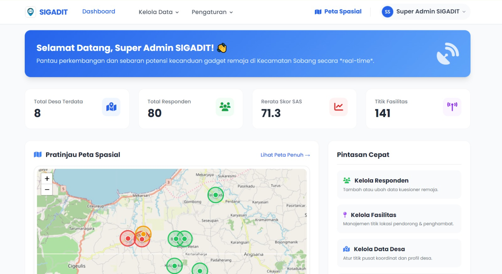

01 / WEB-GIS
FEATURED
Web-GIS SIGADIT
Sistem Informasi Geografis untuk pemetaan potensi kecanduan gadget di Kecamatan Sobang dengan implementasi algoritma K-Means Clustering untuk pengelompokan data spasial.